<div *ngIf="navMegjelenites">
<nav class="nav-sav" [ngClass]="temaSzinN">
  <div class="nav-keret">
    <a class="nav-cim" [ngClass]="temaSzinBetu" routerLink="/" (click)="profilMenuHA()">
      SpeedFormula
      </a>

      <ul class="nav-fo">
        <li [ngClass]="temaSzinHover" class="nav-elo" (click)="profilMenuHA()">
          <a class="nav-link" [ngClass]="temaSzinBetu" routerLink="/elo">
            
            
            ÉLŐ</a>
        </li>
        <li [ngClass]="temaSzinHover" class="nav-hirek" (click)="profilMenuHA()">
          <a class="nav-link" [ngClass]="temaSzinBetu" routerLink="/hirek">
            
            
            Hírek</a>
        </li>
        <li [ngClass]="temaSzinHover" class="nav-versenyzok" (click)="profilMenuHA()">
          <a class="nav-link" [ngClass]="temaSzinBetu" routerLink="/versenyzok">
            
            
            Versenyzők</a>
        </li>
        <li [ngClass]="temaSzinHover" class="nav-csapatok" (click)="profilMenuHA()">
          <a class="nav-link" [ngClass]="temaSzinBetu" routerLink="/csapatok">
            
            
            Csapatok</a>
        </li>
        <li [ngClass]="temaSzinHover" class="nav-tortenet" (click)="profilMenuHA()">
          <a class="nav-link" [ngClass]="temaSzinBetu" routerLink="/tortenet">
            
            
            Történet</a>
        </li>
        <li [ngClass]="temaSzinHover" class="nav-forum" (click)="profilMenuHA()">
          <a class="nav-link" [ngClass]="temaSzinBetu" routerLink="/forum">
            
            
            Fórum</a>
        </li>
      </ul>

      <div [ngStyle]="{display: bejelentkezesMegjelenites ? 'flex' : 'none'}">
        <ul class="nav-regjel">
        <li [ngClass]="temaSzinHover">
          <a class="nav-link" [ngClass]="temaSzinBetu" routerLink="/regisztracio">
            
            
            Regisztráció</a>
        </li>
        <li [ngClass]="temaSzinHover">
          <a class="nav-link" [ngClass]="temaSzinBetu" routerLink="/bejelentkezes">
            
            
            Bejelentkezés</a>
        </li>
        </ul>
      </div>

      <div class="nav-bejel" *ngIf="profilMegjelenites">
        <ul>
        <li>
          <p [ngClass]="temaSzinBetu">{{felhasznaloNev}}</p>
          
        </li>
        </ul>
      </div>

    </div>
</nav>

<div class="bejel-lenyilo" [ngClass]="temaSzinN" [ngStyle]="{display: profilMenuMegjelenites ? 'flex' : 'none'}">
  <ul>
  <li [ngClass]="temaSzinHover" (click)="profilMenu()">
    
    <a [ngClass]="temaSzinBetu" routerLink="/profil">
     Fórum profil</a>
  </li>
  <li [ngClass]="temaSzinHover" (click)="profilMenu()">
    
    
    <a [ngClass]="temaSzinBetu" routerLink="/beallitasok">
    Beállítások</a>
  </li>
  <li [ngClass]="temaSzinHover" (click)="kijelentkezes()" (click)="profilMenu()">
    
    
    <a [ngClass]="temaSzinBetu" id="kijelentkezes">
    Kijelentkezés</a>
  </li>
  </ul>
</div>
</div>
<router-outlet></router-outlet>
